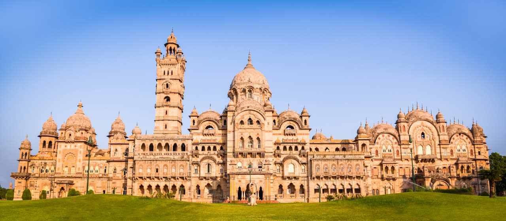

Welcome To Vadodra...

Baroda City
Vadodara also known as Baroda, is the second city in the Indian state of Gujarat. It serves as the administrative headquarters of the Vadodara district and is situated on the banks of the Vishwamitri River, 141 km (88 mi) from the state capital of Gandhinagar. The railway line and National Highway 8, which connect Delhi with Mumbai, pass through Vadodara. The city is named for its abundance of banyan (vad) trees. Vadodara is also locally referred to as the Sanskari Nagari (transl. 'Cultural City') and Kala Nagari of India.
The city is prominent for landmarks such as the Laxmi Vilas Palace, which served as the residence of the Maratha royal Gaekwad dynasty that ruled over Baroda State. It is also the home of the Maharaja Sayajirao University of Baroda.
Vadodara is located at 22.30°N 73.19°E in western India at an elevation of 128 ft (39 m). It is the 10th-largest city in India with an area of 400 km2 (150 sq mi) and a population of 3.5 million, according to the 2010–11 census. The city sits on the banks of the Vishwamitri River, in central Gujarat. The Vishwamitri frequently dries up in the summer, leaving only a small stream of water. The city is located on the fertile plain between the Mahi and Narmada Rivers. According to the Bureau of Indian Standards, the cosmopolis falls under seismic zone-III, on a scale of I to V (in order of increasing proneness to earthquakes).
Vadodara features a borderline tropical savanna climate (Köppen Aw) that despite the roughly 850 mm or 33 in of rain that the city receives annually is due to the area's high potential evapotranspiration very close to being classified as a hot semi-arid climate (BSh). There are three main seasons: summer, monsoon and winter. Aside from the monsoon season, the climate is dry. The weather is hot during March to July, when the average maximum is 39 °C or 102.2 °F, and the average minimum is 24 °C or 75.2 °F. From November to February, the average maximum temperature is 30 °C or 86 °F, the average minimum is 15 °C or 59 °F, and the climate is extremely dry. Cold northerly winds are responsible for mildly chilly days in January. The southwest monsoon brings a humid climate from mid-June to mid-September. The average rainfall is 85 cm (33 in), but infrequent, torrential rains cause the river to flood like the 2005 Gujarat flood or the 2008 Indian floods, which were catastrophic.
Famous Places in Vadodra City
- Makarpura Palace, Vadodara
- Sayaji Garden, Vadodara
- Sayaji Garden, Vadodara
- Vadodara Museum & Picture Gallery, Vadodara
- Surya Narayan Temple, Vadodara
Sur Sagar Lake, Vadodara
- Sri Aurobindo Ashram, Vadodara
- Laxmi Vilas Palace, Vadodara
Vadodra City Famous Food Item
- Sev Usal
- Dabeli
- Various Delicacies Of Egg
- Fafda & Jalebi
- Ragda Patties
© Copyright Reserved
Go To Main Page